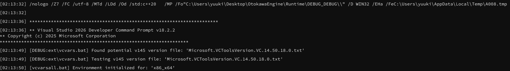
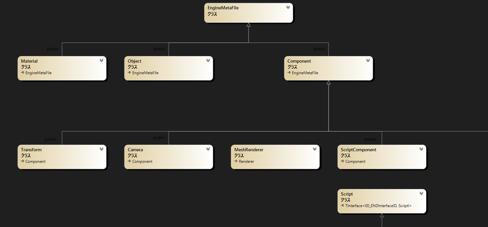
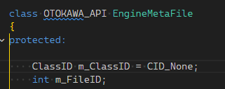
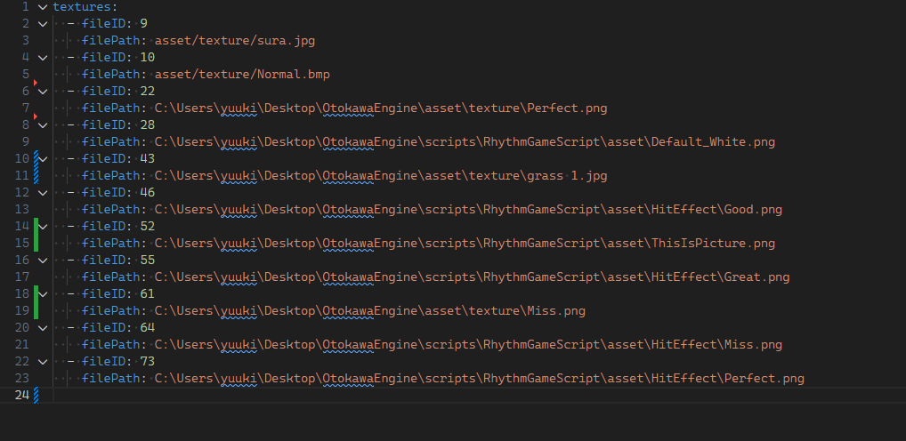
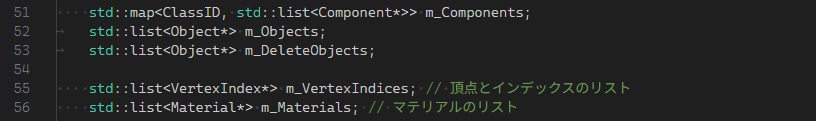
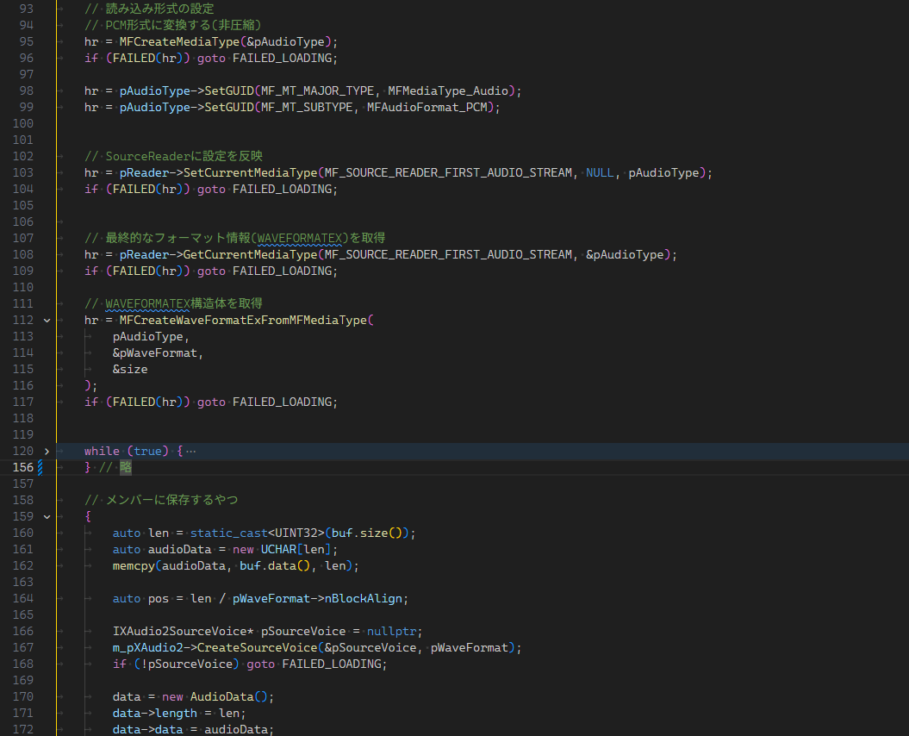
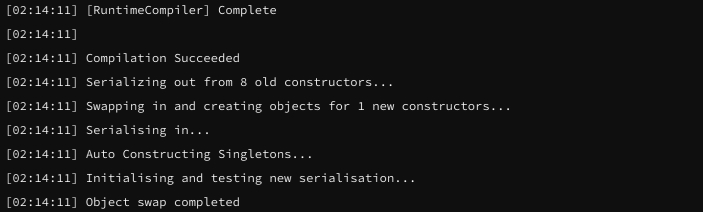

概要
元々、学校の課題等で制作するプログラムにおいて汎用性の高い関数を自作し、再利用・活用することが好きでした。その取り組みをさらに発展させ、「これまで学んできた技術を結集して、自分だけのゲームエンジンを一から自作したい！」という強い想いから本プロジェクトの制作を開始しました。
「GUI上で視覚的にオブジェクトを配置し、スクリプトをアタッチして動かす」という、Unityのような直感的で効率的な開発フローをC++とDirectX11で再現することを目標に掲げました。
堅牢なアーキテクチャを目指してデータ設計に約半年を費やし、スクラップ＆ビルドを3回繰り返しながら開発を進めました。現在ではゲーム開発に必要な基本機能の実装が完了し、実際にゲーム制作が可能な状態に達しています。直近のDirectXを用いた授業課題などでも、この自作エンジンをフル活用して制作した作品を提出しています。
使用技術
使用言語: C++(エンジン内部コード・スクリプト), HLSL(シェーダースクリプト)
グラフィックAPI: DirectX11
特徴
C++スクリプトの動的コンパイル
Runtime Compiled C++を用いたスクリプトの動的コンパイル（ホットリロード）機能を実装しました。
コンパイル対象ファイルの変更を自動で検知して再コンパイルを実行し、生成されたDLLファイルをエンジンへリアルタイムにロードします。
↓ コンパイルログの一部

シェーダースクリプト
D3DCompilerを用いてエンジン内部でHLSLを動的コンパイルし、シェーダーを生成するシステムを構築しています。
ユーザーが作成したカスタムシェーダーコードを読み込むことができ、頂点シェーダー、ピクセルシェーダー、およびコンピュートシェーダーへの対応を現在進行形で実装しています。
マウス操作可能なGUI・シーンエディタ
ImGuiおよびImGuizmoを採用し、扱いやすいエンジン内GUIを構築しました。
シーンビュー上での直感的なオブジェクト移動・回転・拡縮（ギズモ操作）など、Unityと同等の基本的なエディタウィンドウ機能を再現しています。
 ドラッグドロップによるファイル操作
ドラッグドロップによるファイル操作
ImGuiのドラッグ＆ドロップAPIを活用し、アセットやオブジェクトを直感的に操作できるシステムを実装しました。
これにより、Project（アセット一覧）ウィンドウからInspector（詳細）ウィンドウやHierarchy（階層構造）ウィンドウへ、ドラッグ＆ドロップでアセットや参照をアタッチすることが可能です。
 変数の値をリアルタイムで編集可能
変数の値をリアルタイムで編集可能
各種機能紹介
クラス設計
Unityの設計思想に倣い、一元管理用の統合基底クラス「EngineMetaFile」を構築しました。
ゲームオブジェクト、各種コンポーネント、マテリアルなど、エンジンが扱うすべての主要なクラスはこの基底クラスを継承しており、ポリモーフィズムを用いた効率的なオブジェクト管理を実現しています。
↓ EngineMetaFileを継承する一部クラスの継承イメージ

オブジェクト管理
エンジン内部にゲームオブジェクト、コンポーネント、マテリアル等のオブジェクトを一元管理するマネージャークラスを作成し、必要に応じてオブジェクトを生成・削除できるようにした。
EngineMetaFileクラスには一意のfileIDを持たせ、YAMLファイルに読み書きする際にはこの値でオブジェクトを識別する。
また、クラスごとに決まったclassIDを持たせ、YAMLファイルからオブジェクトを復元する際に使用する。

アセット管理
テクスチャ、シェーダーはゲームオブジェクトと同様に一元管理し、読み込みの重複を防止
3Dモデルも対応予定
ゲームオブジェクトはPrefabとしてYAMLファイルに保存・読み込みが可能で、Prefab内で使用されているアセットも同時に管理される。
↓ エンジンが操作するアセットリストのYAMLファイル。左の数字は他のオブジェクト等との連番になるFileID


サウンド機能
XAudio2とMedia Foundationを使用してサウンド機能を実装
WAV, MP3, WMA形式の音声ファイルを読み込み、再生可能
↓ Media Foundationで音声をWAVに変換してXAudio2で読み込むコード

ログ出力
エンジンのGUIにログウィンドウを実装。ホットリロードなどのログが表示される。スクリプトからログを出力することも可能。
↓ ホットリロードのログが流れてくるログ。
